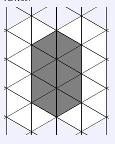

在三角形图上，每个小正三角形的面积都是1。可以在边上走出一个多边形，（即三角形网格图的边界，见下图）使得围成一定的面积。 我们可以用编码来表示走法：（即从一条边到下一条边的方向改变量） a左转120° b左转60° c直走 d右转60° e右转120°

可以描述为cdddcddd 或dddcdddc，cbbbcbbb 对于描述同样形状的图形的不同序列，我们只用字典序最小的，即bbbcbbbc 两个多边形在几何的概念上全等即看做等价。显然等价的图形用字母路径表示出来是一样的。 你的任务有两个： 1． 对于给定的N输出所有面积为N的可以走出来的图形的编码 2． 对于给定的形状序列，求出其面积K并计算在这个图形基础上加一个小三角形可以组成哪些可编码图形。 每个测试点 询问不超过5次 数据保证 N,K ≤ 10